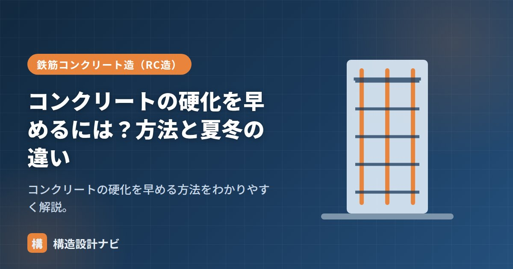

コンクリートの硬化を早めるには？方法と夏冬の違い

工期短縮や寒い時期の施工では、コンクリートの硬化（強度発現）を早めたいことがあります。硬化を早める方法は複数ありますが、いずれも「セメントと水の反応（水和反応）を促進する」という共通の原理に基づいています。ここでは代表的な方法と、夏冬での考え方の違いを整理します。
- 硬化を早めるには早強セメント・促進剤・加温養生・低水セメント比が有効。
- 冬は硬化を早める工夫が必要、夏はもともと速いため急結・急乾燥への注意が必要。
- 硬化を早めても湿潤養生を確実に行い、ひび割れを防ぐことが大切。
硬化を早める原理
コンクリートの硬化は、セメント粒子と水が化学反応を起こし、結晶状の水和物が絡み合って組織を形成する水和反応によって進みます。この反応は温度が高いほど速く、低いほど遅くなる性質があるため、「反応を速める（温度・セメントの反応性を上げる）」か「反応に必要な水を減らして早期に密実な組織をつくる」かの、大きく2つの方向性で硬化を早めることができます。
硬化を早める方法
| 方法 | 内容 |
|---|---|
| 早強セメントを使う | 初期強度が高く、材齢3日で普通の7日相当（→早強コンクリート） |
| 硬化促進剤（促進剤） | 凝結・硬化を早める混和剤を使う |
| 加温・給熱養生 | 保温・ヒーター・蒸気で温度を上げ反応を速める |
| 水セメント比を下げる | 強度発現が速くなる |
夏と冬の違い
つまり、硬化を早める工夫が積極的に必要になるのは主に冬季で、夏季はむしろ「速すぎることへの対処」を考える局面が多くなります。同じ「硬化」というテーマでも、季節によって設計者・施工者が向き合う課題の方向性が逆になる点を押さえておきましょう。
注意点
硬化を早めると、初期の発熱や急乾燥によるひび割れが生じやすくなります。早めつつも湿潤養生を確実に行うことが大切です。また、硬化促進剤の中には鉄筋の腐食を促進する成分を含むものもあるため、鉄筋コンクリート造では使用可否や添加量をあらかじめ確認する必要があります。
Q1. 硬化を早めると強度は下がりますか？
適切な方法であれば初期強度はむしろ高まりますが、急激な発熱・乾燥を伴う方法では長期的な強度・耐久性に悪影響が出ることがあります。早強セメントや水セメント比の調整など、規準に沿った方法を選ぶことが重要です。
Q2. 気温が低いとき、早強セメント以外に対策はありますか？
水や骨材を加熱してコンクリートの練混ぜ温度を上げる方法や、打込み後にシートや断熱材で覆う保温養生、ジェットヒーターなどによる給熱養生を組み合わせるのが一般的です。詳しくは「寒中コンクリート」で解説しています。
冬季の型枠脱型の相談を受けると、早強セメントや促進剤に頼りがちですが、私はまず養生温度の実測データを見るようにしています。硬化を早めても湿潤養生を怠ると表面にひび割れが出やすく、見た目以上に品質のばらつきにつながるためです。
「早強コンクリート」「コンクリートの硬化時間」「寒中コンクリート」をどうぞ。
硬化を早める方法の比較
| 方法 | 効果の大きさ | 注意点 | コスト |
|---|---|---|---|
| 早強セメントの使用 | 大（材齢3日で普通の7日相当） | 水和熱・乾燥収縮が増える。大断面では温度ひび割れに注意 | やや高い |
| 給熱・保温養生 | 大（低温時に特に有効） | 局所的な加熱で温度差が生じるとひび割れる。乾燥にも注意 | 設備・燃料費 |
| 硬化促進剤 | 中 | 塩化物系は鉄筋腐食のおそれ。非塩化物系を使う | 中 |
| 水セメント比を下げる | 中 | 単位セメント量が増え発熱・収縮も増える | 中 |
| 蒸気養生 | 大 | 工場製品（プレキャスト）向け。現場では実施困難 | 設備が必要 |
夏と冬で考え方が逆になる
硬化を早める対策は、いずれも水和反応を加速させるものです。反応が速いということは、単位時間あたりの発熱も大きいということで、断面の大きい部材では温度ひび割れのリスクが高まります。また、初期強度を優先すると長期強度の伸びが小さくなる傾向もあります。工期短縮のメリットと、品質面のデメリットを比較して判断する必要があります。
まとめ
- 硬化を早めるには早強セメント・促進剤・加温養生・低水セメント比が有効。
- いずれも水和反応を促進するという共通の原理に基づく。
- 冬は早める工夫が必要、夏は速いので急結・乾燥に注意。
- 早めても湿潤養生を確実に行い、ひび割れを防ぐ。